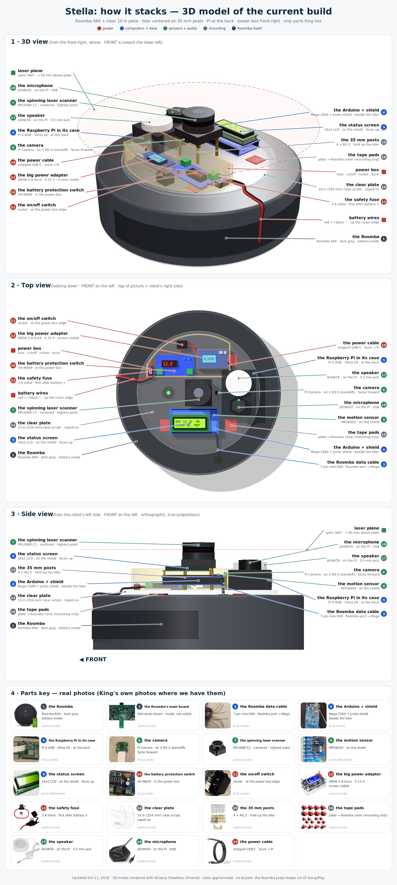
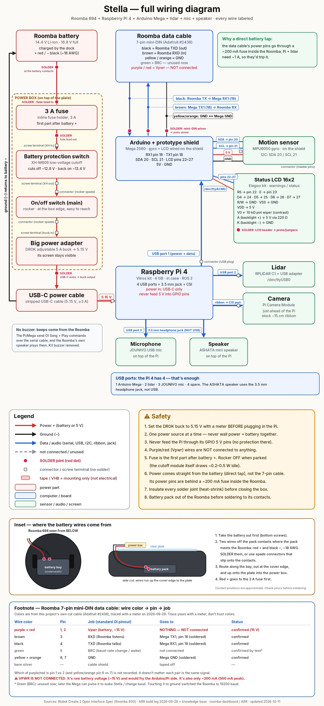

Stella is a Roomba 694 turned into a home robot. The Roomba still drives, docks and cleans. A clear deck on top carries a computer, a lidar, a camera and a voice.
She talks to the Roomba over its 7-pin serial port (iRobot Open Interface) and runs on the Roomba's own battery.
| Sys | Part | Job |
|---|---|---|
| 2.1 | Raspberry Pi 4 · ROS 2 Jazzy | Brain: driving, mapping, voice |
| 2.2 | RPLIDAR C1 | 360° scans → room map (slam_toolbox) |
| 2.3 | Pi Camera Module | Sees ahead |
| 2.4 | Arduino Mega 2560 + shield | Reflexes; serial link to the Roomba |
| 2.5 | 16x2 LCD | Status at a glance |
| 2.6 | MPU6050 | Heading and tilt |
| 2.7 | Speaker + USB mic | Voice — wake word "Stella" |
| 2.8 | Fuse · cutoff · rocker · 5 A buck | Clean 5.15 V from the Roomba battery |
2.8 Power chain
Power is tapped straight from the battery. The data cable's power pins sit behind a ~200 mA fuse inside the Roomba; Pi + lidar need ~1 A.


| # | Part | Spec | Role |
|---|---|---|---|
| 01 | Roomba 694 | Li-ion 14.4 V pack | Body, wheels, battery |
| 02 | Main board | Used 600-series | Roomba controller (OI works) |
| 03 | Data cable | 7-pin mini-DIN, Adafruit #2438 | Roomba ↔ Mega serial |
| 04 | Arduino Mega 2560 | Elegoo + proto shield | Reflexes, sensors |
| 05 | Raspberry Pi 4 | 4 GB, Vilros kit + case | Brain |
| 06 | Pi Camera Module | Stock ribbon, 2 standoffs | Vision |
| 07 | RPLIDAR C1 | USB adapter | Mapping |
| 08 | MPU6050 | I2C, on shield | Heading |
| 09 | 16x2 LCD | Pins 22–27 | Status |
| 10 | XH-M609 | Low-voltage cutoff | Battery protection |
| 11 | Rocker switch | At power-box edge | Main on/off |
| 12 | DROK buck | Adjustable 5 A, set 5.15 V | Pi power |
| 13 | Inline fuse | 3 A | Short protection |
| 14 | Acrylic plate | 10 in, 1/8 in | Deck |
| 15 | M2.5 standoffs | 35 mm stacks | Lidar posts |
| 16 | VHB 5952 pads | — | Plate → Roomba, no drilling |
| 17 | ASHATA speaker | 3.5 mm jack | Voice out |
| 18 | JOUNIVO JV808 | USB mic | Voice in |
| 19 | USB-C cable | Stripped, 20 AWG | Buck → Pi |
Built by King Sharif with his agents — Claude, Grok, Muse.
| Who | Made |
|---|---|
| King Sharif | The robot: design calls, wiring, soldering, testing |
| Claude | Hardware + Pi work with King: serial debugging, ROS 2 setup, Pi diagnosis |
| Grok | 3D model + viewer, layout and wiring diagrams, docs, this page |
| Muse | Living logo, voice plan (offline "Stella" wake word), repo setup |